For anyone who hit the goals and still feels lost. MDT is about building yourself across three fronts, body, mind, and spirit, and aiming at something above your own comfort. Start with the tools below.
Train so your body serves your life and your mission, not the mirror, not punishment. Capability and survivability over aesthetics.
The honesty and discipline to face what you're avoiding, integrate your drive instead of burying it, and stop being the cruellest voice in your own head.
Orient your life toward something above your own comfort. Aim higher, take responsibility, become someone worth becoming. No preaching, just the question of what you're pointed at.
A 12-question, 4-minute self-audit on your phone, dopamine, and doomscrolling. Find where the grip is tightest, the reflex grab, the endless scroll, the flattened baseline, and the fixes that actually work.
Calculate your daily macros and generate a full week of meals from a library of 200 recipes. Bulk-prep mode (multiplies every recipe to cover the week) or daily variety, with food-preference filters.
1RM estimator, working-set weight calculator (RPE-based), warm-up set builder, plate maths. Coming next.
Pace, splits, finish-time predictor across distances, training-zone heart rate, race-day fuel planner.
Stretching and mobility flows by body region or pain area. Timed sequences with built-in rest periods.
A toolkit for people who train. Each tool is built around evidence-based formulas and good defaults, the kind of thing you'd otherwise have to piece together from textbooks, apps, or scattered fitness sites.
Open a tool, use it, close the tab. Everything runs in your browser, so your inputs stay on your device.
New tools land here as they're built. If you've got an idea for one, get in touch.
These tools are the free, open front door to MDT, physical, mental, spiritual: becoming more capable, more grounded, and aimed at something higher. Start with The Dopamine Audit if you want to know where you actually stand.
The whole system in one document: the three layers, the domains, and how to program them, biasing the limitation while you train the full athlete.
Download the framework (PDF)